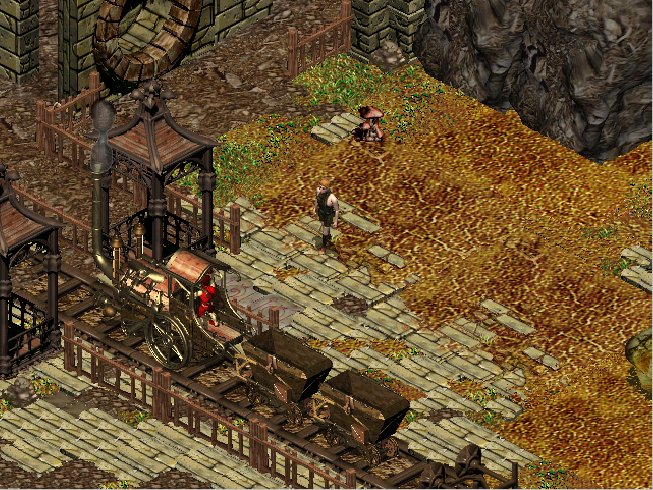
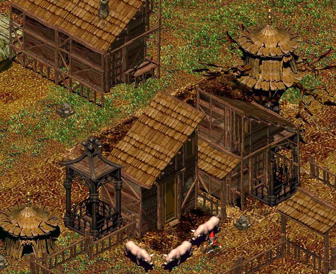
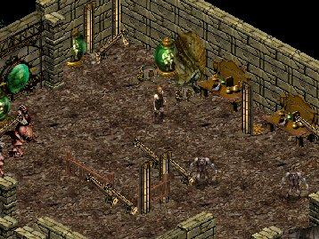
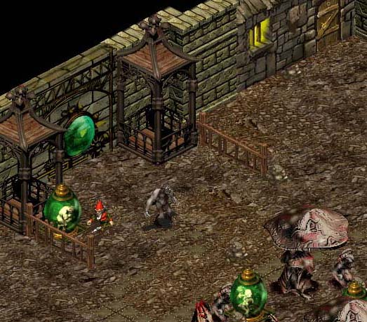
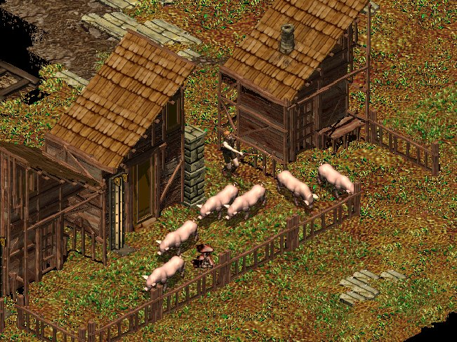
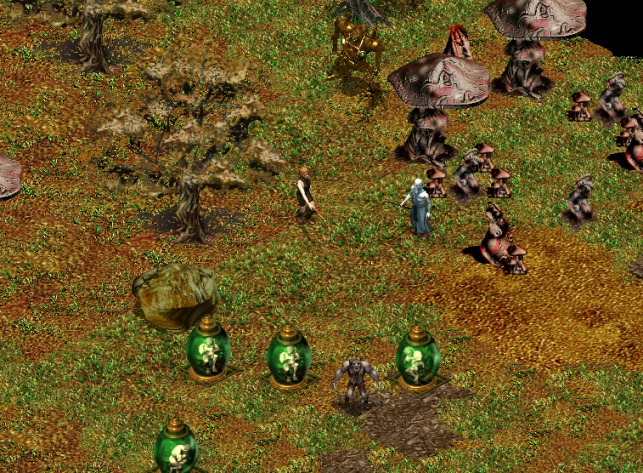
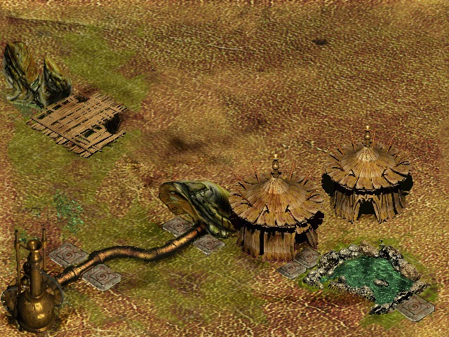

Description : splendides captures d'écrans prises en flagrant délit, pendant que je faisais mumuse sur la pré-alpha-beta-démo, peut avant de partir au Milia.
Date : 14/02/2000
Version : 1.50b

Oh le joli petit
train ... mais ne serait-il pas conduit par un nain ?

Cours petit nain,
cours ... je t'aurais !
| 
|

|

Prenez garde à
vous vilains cochons, me voici !

Et me voila a present dans un tout nouveau niveau (New.niv)
Description : Toutes 1eres images de ZeGame
Date : Juin 1998
Version : 0.01b

Et oui, a l'epoque, y'avait juste 4 bitmaps de fond
qui scrollaient